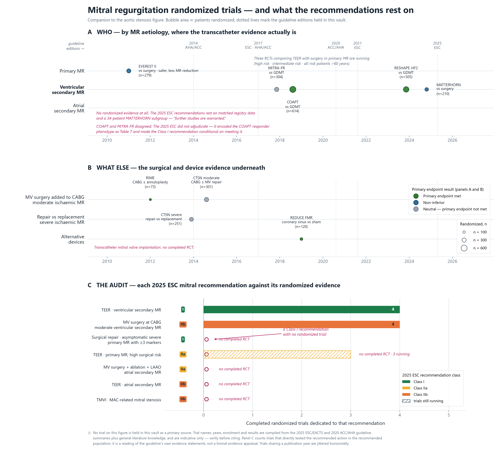

Mitral Regurgitation
MR에서 수술과 시술 사이의 선은 나이가 아니라 원인으로 그어집니다. 1차성 MR은 수술이 표준이고 TEER는 고위험 환자의 대안이며, 심실성 2차성 MR에서는 TEER가 약물치료 위에 얹는 치료로 Class I까지 올라왔습니다.
결정 도구 — 세 기준의 권고를 나란히
원인을 먼저 고르면 그에 맞는 입력 항목이 나타납니다.
"중증"의 정의부터 다르다 — 2차성 MR
2D PISA가 2차성 MR의 초승달 모양 역류구를 과소평가한다는 물리는 같지만, 대응은 정반대입니다. 값을 넣어 보세요.
| 기준 | 중증 기준값 | 이 환자 |
|---|
ESC의 2차성 MR 기준은 20 → 40 → 30 mm²로 왕복했습니다(2012 / 2021 / 2025). "ESC 기준"을 인용할 때는 판 연도를 붙여야 합니다. KSE는 ACC/AHA 쪽(1차성과 같은 0.4 cm²)을 택했습니다.
권고 비교
1차성 MR
| 상황 | ACC/AHA 2020 | ESC 2025 | KSE 2023 |
|---|---|---|---|
| 증상 있는 중증 | 수술 I (B-NR) — LV 기능과 무관 | 수술 I (B) | 수술 |
| 무증상 + LV 기능저하 | I (B-NR) — LVEF ≤60% 또는 LVESD ≥40 | I (B) — + LVESDi ≥20 | 수술 |
| 무증상, LV 정상, 표지자 3개 이상 AF · SPAP >50 · LA 확장 · TR ≥중등도 | 해당 권고 없음 | I (B) — 2025 신설 | 수술 (각 표지자가 단독 기준) |
| 무증상 + AF 또는 SPAP >50 | — | IIa (B) | 수술 |
| 무증상, 내구성 있는 성형 가능 | IIa (B-NR) — 성공 >95%, 사망 <1% | IIa (B) — LA 확장 동반 시 | 저위험이면 수술 |
| TEER | IIa (B-NR) — NYHA III–IV, 고위험/수술불가, 기대여명 ≥1년 | IIa (B) — 고위험 | 증상 + 고위험 + 해부학 적합 |
2차성 MR
| 상황 | ACC/AHA 2020 | ESC 2025 | KSE 2023 |
|---|---|---|---|
| 심실성 — TEER | IIa (B-R) — LVEF 20–50, LVESD ≤70, PASP ≤70 | I (A) — Table 7 기준 충족 | reasonable — COAPT 기준 |
| 심실성 — TEER, 기준 미충족 | — | IIb (B) — LVAD/이식 평가 후 | MV 수술 또는 이식/LVAD |
| 심실성 — CABG 시 중증 MR | IIa (B-NR) | I (B) | reasonable |
| 심실성 — 단독 수술 | IIb (B-NR) — NYHA III–IV | IIb (C) — TEER 부적합 시 | LVEF ≥50% 또는 TEER 기준 미충족 시 |
| 심실성 + 단순 CAD — PCI 후 TEER | — | IIb (C) | — |
| 심방성 — 수술 | IIb (B-NR) | IIa (B) — + AF 절제 + LAAO | 판륜성형 + AF 절제 "can be beneficial" |
| 심방성 — TEER | — | IIb (B) — 수술 부적합 시 | — |
ESC 2025 Table 7 — Class I TEER의 조건
COAPT와 MITRA-FR의 차이를 "어느 시험이 옳은가"가 아니라 COAPT 반응군의 표현형으로 정리한 목록입니다. 앞의 네 항목과 SPAP는 ACC/AHA·KSE도 쓰는 COAPT 등록 기준입니다.
| TEER에 적합한 해부학 | NYHA ≥II | LVEF 20–50% | LVESD ≤70 mm |
| SPAP ≤70 mmHg | 1년 내 심부전 입원 또는 BNP ≥300 / NT-proBNP ≥1000 | 중증 RV 기능부전 없음 | Stage D 아님 |
| 재관류가 필요한 CAD 없음 | 중증 AV·TV 질환 없음 | 비후성·제한성·침윤성 심근병증 없음 |
COAPT 기기군도 5년 사망 또는 심부전 입원 누적 발생률이 73.6%였습니다. 시술은 경과의 기울기를 바꾸지만 질환을 바꾸지는 않습니다.
근거 — 무작위 임상시험의 지형
A: 원인별 TEER 시험 · B: 그 아래의 수술 근거 · C: 2025 ESC 권고별 완료된 전용 RCT 수

진행 중 — 1차성 MR에서 TEER vs 수술 (ClinicalTrials.gov, 2026-10-09)
| MITRA-HR | REPAIR MR | PRIMARY | |
|---|---|---|---|
| 수술 위험도 | 고위험 | 중위험 (≥75세 또는 STS ≥2%) | 전 위험도, ≥60세 퇴행성 MR |
| 비교 | MitraClip vs 수술 | MitraClip vs 성형술 | TEER vs 성형술 |
| n | 330 (예정) | 500 (예정) | 450 (등록 완료) |
| 1차 완료 예정 | 2026년 12월 | 2027년 12월 | 2029년 6월 |
고위험 → 중위험 → 전 위험도: TAVI가 2011–2019년에 PARTNER 1A → 2A → 3로 밟은 순서를 MR이 약 10년 늦게 밟고 있습니다.
한국 — 식약처(MFDS)는 2019년 퇴행성 MR에 대해 mitral TEER를 승인했고, 초기 국내 성적은 MR ≤2+ 94%, 30일 사망 6%였습니다. 국내 레지스트리에서 2차성 MR은 비허혈성이 63%로 서구 자료보다 허혈성 비율이 낮습니다.
출처
2020 ACC/AHA · 2025 ESC/EACTS (Recommendation Tables 6–7, Table 7) · 2023 KSE position paper Part II: mitral and tricuspid valve disease (J Cardiovasc Imaging 2024;32:10) · ClinicalTrials.gov NCT03271762, NCT04198870, NCT05051033. 판별 등급표는 가이드라인 변천에.